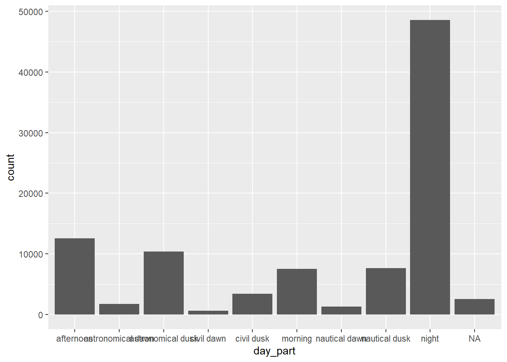

library(skimr)
library(tidyverse)
library(ggthemes)TidyTuesday Week 25: UFO Sightings Redux
R
TidyTuesday
R-code
code-along
data visualization
TidyTuesday: UFO Sightings
I haven’t been TidyTuesdaying because I’ve been learning Tableau. I’ll write more about that later; but it has been an interesting experience and provides different perspectives on data compared to what you might get from R. (I’m sure you could reproduce everything in Tableau in R and vice versa, but it is certainly easier to perform certain actions in one program over the other.)
Today’s TidyTuesday is based on a dataset about the UFO sightings. This is an updated version of a tidytuesday challenge from 2019. The readme suggests that differences between the two datasets might be especially interesting.
Load the data with the TidyTuesday package in the usual way.
tuesdata <- tidytuesdayR::tt_load(2023, week = 25)--- Compiling #TidyTuesday Information for 2023-06-20 ------- There are 3 files available ------ Starting Download ---
Downloading file 1 of 3: `ufo_sightings.csv`
Downloading file 2 of 3: `places.csv`
Downloading file 3 of 3: `day_parts_map.csv`--- Download complete ---ufo_sightings <- tuesdata$`ufo_sightings`
places <- tuesdata$`places`
day_parts_map <- tuesdata$`day_parts_map`This dataset combines information about reported UFO sightings with information about the lighting conditions at that time from sunrise-sunset. That is, was it day time, night time, twilight, etc. when the sighting occurred. This is an augmentation of the original dataset.
skim(ufo_sightings)| Name | ufo_sightings |
| Number of rows | 96429 |
| Number of columns | 12 |
| _______________________ | |
| Column type frequency: | |
| character | 7 |
| Date | 1 |
| logical | 1 |
| numeric | 1 |
| POSIXct | 2 |
| ________________________ | |
| Group variables | None |
Variable type: character
| skim_variable | n_missing | complete_rate | min | max | empty | n_unique | whitespace |
|---|---|---|---|---|---|---|---|
| city | 0 | 1.00 | 3 | 26 | 0 | 10721 | 0 |
| state | 85 | 1.00 | 2 | 31 | 0 | 684 | 0 |
| country_code | 0 | 1.00 | 2 | 2 | 0 | 152 | 0 |
| shape | 2039 | 0.98 | 3 | 9 | 0 | 24 | 0 |
| reported_duration | 0 | 1.00 | 2 | 25 | 0 | 4956 | 0 |
| summary | 31 | 1.00 | 1 | 135 | 0 | 95898 | 0 |
| day_part | 2563 | 0.97 | 5 | 17 | 0 | 9 | 0 |
Variable type: Date
| skim_variable | n_missing | complete_rate | min | max | median | n_unique |
|---|---|---|---|---|---|---|
| posted_date | 0 | 1 | 1998-03-07 | 2023-05-19 | 2012-08-19 | 619 |
Variable type: logical
| skim_variable | n_missing | complete_rate | mean | count |
|---|---|---|---|---|
| has_images | 0 | 1 | 0 | FAL: 96429 |
Variable type: numeric
| skim_variable | n_missing | complete_rate | mean | sd | p0 | p25 | p50 | p75 | p100 | hist |
|---|---|---|---|---|---|---|---|---|---|---|
| duration_seconds | 0 | 1 | 31613.25 | 6399774 | 0 | 30 | 180 | 600 | 1987200000 | ▇▁▁▁▁ |
Variable type: POSIXct
| skim_variable | n_missing | complete_rate | min | max | median | n_unique |
|---|---|---|---|---|---|---|
| reported_date_time | 0 | 1 | 1925-12-29 | 2023-05-18 19:27:00 | 2012-02-05 03:00:00 | 86201 |
| reported_date_time_utc | 0 | 1 | 1925-12-29 | 2023-05-18 19:27:00 | 2012-02-05 03:00:00 | 86201 |
The data is fairly complete. The daypart is the least complete with only 97% completion. This variable is currently a string; it would be better as a factor.
ufo_sightings$day_part <- as.factor(ufo_sightings$day_part)Now we can see when it is most common to see UFOs.
ggplot(ufo_sightings, aes(day_part)) +
geom_bar()
This is a pretty ugly plot. First, I’m going to clean up the formatting. The day-parts should be tilted so they are not overlapping, the axis labels are not clear, and I don’t like the default ggplot theme. You need to change the plot theme before you tilt the axis labels, otherwise the theme’s defaults will reset the axis label orientation.
ggplot(ufo_sightings, aes(day_part)) +
geom_bar() +
ylab("Number of Sighting") +
xlab("") +
theme_classic() +
theme(axis.text.x = element_text(angle = 45,hjust = 1)) Now, there are two ways to order the bars. Usually, I’d use either ascending or descending order by count. But here, the day parts do have an intrinsic order- most light to least light (or the reverse) or something along the cycle. So, I need to order the factor day_part. I used the explanation here get the order and decide on the color scale. I decided that afternoon was lighter than morning.
First, I’ll code the NAs as “unknown”. It is a small percentage of the total data, so dropping them is also a defensible choice. It doesn’t really impact the visualization to leave them in, and it does reveal some information about how detailed the reports are.
I love the POSIT cheatsheets for checking syntax, especially the printed pdfs because I annotate them with my own notes. However, they can end up out of date. Recently POSIT has created HTML versions and updated most of the pdfs. So if you have a printed forcats cheatsheet branded RStudio, go get the new POSIT’s one, since some of the functions on the old cheatsheet are deprecated.
To convert NAs to a named level, the current function is fct_na_value_to_level rather than fct_explicit_na and the level is specified with level = "blah" rather than na_level = "blah". Both ways are shown in the code block and both will work.
# old way of converting NAs to a specific level
#ufo_sightings$day_part <- fct_explicit_na(ufo_sightings$day_part, na_level = #"unknown")
# new way of converting NAs to a specific level
ufo_sightings$day_part <- fct_na_value_to_level(ufo_sightings$day_part, level = "unknown")Now, I need to relevel the day_parts factor. I started with morning, and then progressed through the day_parts in the order they occur. I put the unknown level last.
ufo_sightings$day_part <- fct_relevel(ufo_sightings$day_part,c("morning",
"afternoon", "civil dusk", "nautical dusk",
"astronomical dusk", "night",
"astronomical dawn", "nautical dawn",
"civil dawn", "unknown"))Now, I’m going to use the aesthetic fill = day_part to color my bars by time of day. I’m also going to define a manual color scale in blues, grays, and blacks to reflect the state of the sky- light blues for daylight and darker blues/blacks for night times. I made the unknown green (for little green men). I played around with both colors and values to get a gradient that I liked. Note that both gray and grey work. I kept the legend on while I was adjusting the colors because it was easier to see the gradient as compared to looking at the bar chart, but I turned it off for the final graph.
ggplot(ufo_sightings, aes(day_part, fill = day_part)) +
geom_bar() +
ylab("Number of Sighting") +
xlab("") +
theme_classic() +
theme(axis.text.x = element_text(angle = 45,hjust = 1)) +
scale_fill_manual(values = c("lightskyblue2", "lightskyblue1", "skyblue2",
"skyblue3","lightskyblue4", "grey23","lightskyblue4","skyblue3","skyblue2",
"green")) +
ggtitle("When do UFO Sightings Occur?") +
theme(legend.position = "none")So most sightings take place at night and very few take place in the early morning.
The sightings database also contains pictures of UFOs. Not all reports include pictures. It seems like it would be hard to get a good picture at night, so I’m wondering if most pictures are taken during daylight hours, despite having fewer over all sightings.
has_images is a boolean and the dataset is complete, but it seems that everything is coded FALSE? The original dataset from 2019 doesn’t include has_images, so I can’t use that to repair most of the entries.
ufo_sightings %>%
group_by(day_part) %>%
summarise(mean(has_images))# A tibble: 10 × 2
day_part `mean(has_images)`
<fct> <dbl>
1 morning 0
2 afternoon 0
3 civil dusk 0
4 nautical dusk 0
5 astronomical dusk 0
6 night 0
7 astronomical dawn 0
8 nautical dawn 0
9 civil dawn 0
10 unknown 0Looking at how the current dataset was prepared doesn’t help much either. The data was rescraped from National UFO Reporting Center as shown here and does not seem to include the original tidytuesday dataset at all. Searching for has_image, I find it first mentioned in line 890.
data_ufo_reports_clean <- data_ufo_reports_durations |>
dplyr::mutate(
state = dplyr::coalesce(state, ascii_state),
# Recode "images" to TRUE/FALSE, and replace NAs while we're at it.
has_images = isTRUE(images == "Yes"),
Looking at the saved scraped data, found here, there is an images column that contains “Yes” or NA. It is very incomplete, with a completion rate of 1%. I also looked at the final cleaned data (post encoding to TRUE/FALSE) and it only has FALSES. So, it looks like the re-coding might have gone wrong.
Here is the original data from the scraping.
url <- "https://github.com/jonthegeek/apis/raw/main/data/data_ufo_reports.rds"
ufo_path <- withr::local_tempfile(fileext = ".rds")
download.file(url, ufo_path)
data_ufo_reports_1 <- readRDS(ufo_path)See how many images are in this dataset.
data_ufo_reports_1 %>%
filter(images == "Yes") %>%
nrow()[1] 2342There are only 2342 images in the database. The raw scrapped data has 144451 rows, while our cleaned processed data has 96429 rows. So a fair number of data points were dropped. It is possible that all of the records with images were dropped during the cleaning and processing.
I’m going to join the UFO dataset with the scrapped data. I’m letting R decide what columns to join on, but the join does need to include summary, since that is one column that certainly was not cleaned/ processed.
The place names were cleaned (see for example lines 277 and beyond in the cleaning code). When I do an inner_join, I only get 1881 records. I’d expect to get the 96429 records in the ufo_sightings data file, since they should be contained in the original larger dataset.
combined <- ufo_sightings %>%
inner_join(data_ufo_reports_1) Joining with `by = join_by(city, state, shape, summary)`combined %>%
nrow()[1] 1881If I were working on this for something more mission critical, I’d dig through the cleaning code more carefully, and make sure it was all ok. For now, I’m just going to check the Boolean encoding step, using my much smaller combined dataframe.
# counting how many images
combined %>%
filter(images == "Yes") %>%
nrow()[1] 18# this is the re-coding step from the tidytuesday data
combined2 <- combined %>%
dplyr::mutate(
# Recode "images" to TRUE/FALSE, and replace NAs while we're at it.
has_images_tester = isTRUE(images == "Yes"))
# counting how many images again
combined2 %>%
filter(images == "Yes") %>%
nrow()[1] 18# counting how many images after recode
combined2 %>%
filter(has_images_tester == TRUE) %>%
nrow()[1] 0So, the specified code clearly doesn’t work. This is how I’d do it. I’d explicitly code both TRUE and FALSE using an ifelse clause in the mutate. Since the images contains a bunch of NAs, you need to be more careful about your test condition: images == "Yes" does give you the correct TRUEs, but it gives no FALSEs and retains all the NAs.
combined3 <- combined2 %>%
dplyr::mutate(
# Recode "images" to TRUE/FALSE, and replace NAs while we're at it.
has_images_correct1 = ifelse(images == "Yes", TRUE, FALSE))
combined3 %>%
filter(has_images_correct1 == TRUE) %>%
nrow()[1] 18combined3 %>%
filter(has_images_correct1 == FALSE) %>%
nrow()[1] 0The better test condition for this dataset is to use is.na(images) == FALSE (or the reverse, it doesn’t matter) and code NAs as FALSE and everything else as TRUE. This works because we have only have two values in the column (NA/ Yes). If you had other correct values, say Yes/ No/ NA, then this would not work. You’d need more complicated logic or two sets of ifelse.
combined4 <- combined3 %>%
dplyr::mutate(
# Recode "images" to TRUE/FALSE, and replace NAs while we're at it.
has_images_correct2 = ifelse(is.na(images) == FALSE, TRUE, FALSE))
combined4 %>%
filter(has_images_correct2 == TRUE) %>%
nrow()[1] 18combined4 %>%
filter(has_images_correct2 == FALSE) %>%
nrow()[1] 1863So this method of recoding works. My approach would be to first copy the entire processing code from line 140 onwards and update the coding of images at 890 and re-run the whole thing and see what was produced. But more detailed checking of other steps might be required, depending on the application.
Citation
BibTeX citation:
@online{sinks2023,
author = {Sinks, Louise E.},
title = {TidyTuesday {Week} 25: {UFO} {Sightings} {Redux}},
date = {2023-06-20},
url = {https://lsinks.github.io/posts/2023-06-19-tidytuesday-UFOs/UFOs.html},
langid = {en}
}
For attribution, please cite this work as:
Sinks, Louise E. 2023. “TidyTuesday Week 25: UFO Sightings
Redux.” June 20, 2023. https://lsinks.github.io/posts/2023-06-19-tidytuesday-UFOs/UFOs.html.